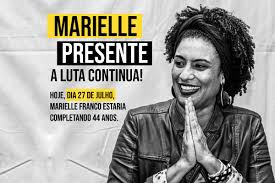
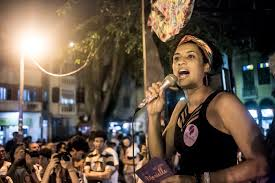
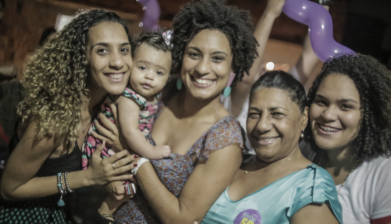
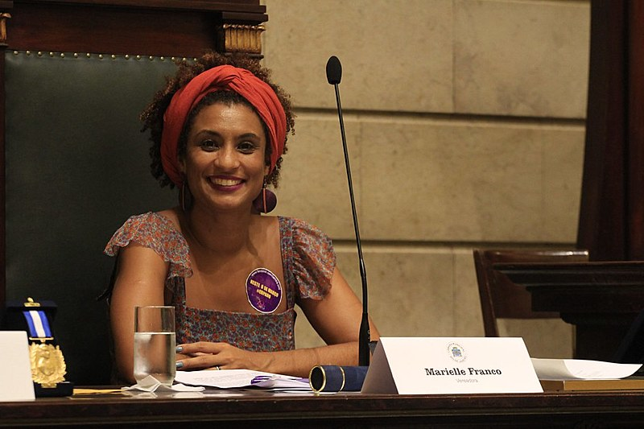
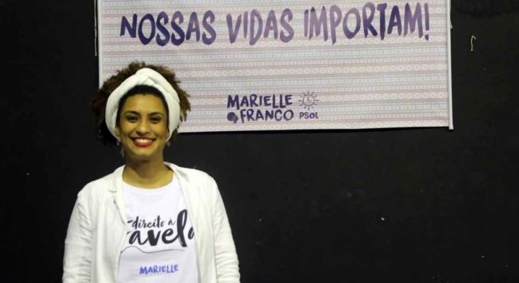
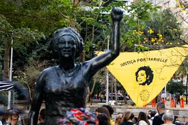

Marielle Francisco da Silva (1979-2018), conhecida publicamente como Marielle Franco, foi uma política brasileira. Formada em Sociologia (pela PUC-Rio) e com Mestrado em Administração Pública (pela UFF), Marielle foi eleita Vereadora do Rio de Janeiro pelo PSOL (Partido Socialismo e Liberdade) no ano de 2016. Negra, mulher, feminista, pobre, criada na favela e gay, Marielle representou uma série de minorias ao longo da sua vida política. A socióloga presidiu a Comissão da Mulher da Câmara, foi defensora dos direitos humanos e das causas LGBTI. Marielle Franco, a vereadora e defensora dos direitos humanos no Brasil, foi homenageada postumamente com várias premiações e reconhecimentos. Entre elas, destacam-se o Prêmio de Direitos Humanos da ONU e o Prêmio de Direitos Humanos de 2018 da Assembleia Legislativa do Estado do Rio de Janeiro. Seu legado é lembrado em diversas iniciativas e eventos que promovem a luta por justiça social e igualdade.
Em 2002, ingressou na Pontifícia Universidade Católica do Rio de Janeiro (PUC-Rio), graduando-se em ciências sociais com uma bolsa de estudos integral obtida pelo Programa Universidade para Todos (Prouni). Após se graduar em Ciências Sociais, concluiu um mestrado em administração pública pela Universidade Federal Fluminense (UFF), onde defendeu a dissertação intitulada "UPP - A redução da favela a três letras: uma análise da política de segurança pública do Estado do Rio de Janeiro". Após a graduação, Marielle ingressou no mestrado de Administração Pública da Universidade Federal Fluminense (UFF). A sua dissertação, defendida em 2014, focava na atuação das UPPs (Unidade de Polícia Pacificadora) e tecia uma análise da política de Segurança Pública do Estado do Rio de Janeiro.
Marielle era filha de Marinete da Silva e Antônio Francisco da Silva Neto e tinha como irmã Anielle Franco. A família vivia na Complexo da Maré, região pobre situada no Rio de Janeiro.Aos 19 anos, Marielle deu à luz a sua única filha, Luyara Franco, fruto de uma relação com o seu primeiro namorado. Marielle foi companheira da arquiteta Mônica Benício, com quem se relacionava desde 2004.Marielle Franco se identificava como bissexual. Em 2017, mudou-se para o bairro carioca da Tijuca com sua companheira, Monica Tereza Benicio, e sua filha Luyara Santos, então com 18 anos de idade. Marielle e Monica se conheceram em uma viagem com amigas em 2005, quando tinham 18 e 24 anos.Sendo uma mulher negra, Marielle lidou com a discriminação racial. Ela frequentemente abordava as injustiças raciais em seus discursos e trabalhos.Marielle também foi alvo de ameaças e violência devido ao seu ativismo e ao seu trabalho em defesa dos direitos humanos, especialmente em um contexto de crescente violência no Brasil. Crescendo em uma comunidade periférica, Marielle teve que lutar contra estigmas associados à sua origem e a falta de oportunidades para pessoas de classes menos favorecidas. Ela usou suas experiências para lutar contra essas injustiças e se tornou uma voz importante na luta pelos direitos humanos e pela igualdade.
Marielle foi vendedora ambulante, dançarina, empregada doméstica e educadora infantil até reunir dinheiro para pagar os próprios estudos. Após a morte de uma amiga próxima, vítima de bala perdida, Marielle resolveu se dedicar à militância pelos direitos humanos. A socióloga trabalhou na Redes da Maré e criticou duramente os abusos de poder das forças policiais. Em 2006, Marielle acabou por integrar a equipe da Comunidade da Maré que fez campanha para o deputado Marcelo Freixo, político carioca considerado o padrinho político de Marielle. Marielle se elegeu em 2016 para a Câmara dos Vereadores do Rio de Janeiro pelo partido PSOL com 46.502 votos. Ela foi a quinta vereadora mais bem votada da cidade. Durante o mandato, a socióloga presidiu a Comissão da Mulher da Câmara. Defensora dos direitos humanos, coordenou, junto com Marcelo Freixo, a Comissão de Defesa dos Direitos Humanos e Cidadania da Assembleia Legislativa do Rio de Janeiro (Alerj). Como mulher em um espaço político dominado por homens, Marielle enfrentou misoginia e sexismo. Sua presença como uma mulher forte e articulada desafiava estereótipos de gênero. Marielle era uma mulher bissexual e defendia os direitos da comunidade LGBTQIA+. Isso a tornou alvo de preconceitos adicionais em um contexto social que muitas vezes marginaliza essas identidades.
Franco assumiu a coordenação da Comissão de Defesa dos Direitos Humanos e Cidadania da ALERJ, onde prestou auxílio jurídico e psicológico a familiares de vítimas de homicídios ou policiais vitimados. Um dos casos que ela ajudou a solucionar foi o de um policial civil assassinado por um colega. Marielle apresentou na Câmara o projeto do Dia da Visibilidade Lésbica, que não foi aprovado por apenas dois votos. Ao longo do período em que atuou como vereadora apresentou 16 projetos de lei, especialmente pensados em políticas públicas para negros, mulheres e LGBTI.
Marielle chegou à Casa das Pretas, na rua dos Inválidos, na Lapa, para mediar um debate promovido pelo Partido Socialismo e Liberdade (PSOL) com jovens negras, por volta das dezenove horas. Segundo imagens obtidas pela polícia, um Cobalt com placa de Nova Iguaçu, município da Baixada Fluminense, estava parado próximo ao local Por volta das vinte e uma horas, Marielle deixou a Casa das Pretas com uma assessora e um motorista, sendo logo seguida por um carro do mesmo modelo que estava parado próximo ao local. Por volta das vinte e uma horas e trinta minutos, na Rua Joaquim Paralhes, no Estácio, região central da cidade, um veículo emparelha com o carro de Marielle e faz treze disparos. Nove acertam a lataria e quatro acertam o vidro. A vereadora foi atingida por três tiros na cabeça e um no pescoço e o motorista Anderson Pedro Mathias Gomes levou ao menos três tiros nas costas, o que causou a morte de ambos. A assessora foi atingida por estilhaços, levada a um hospital e liberada. A polícia declarou acreditar que o carro dela foi perseguido por cerca de quatro quilômetros. Os executores fugiram do local sem levar quaisquer bens. Após ser velado na Câmara Municipal carioca, com a presença de milhares de pessoas, o corpo de Franco foi enterrado em 15 de março, no Cemitério São Francisco Xavier (Cemitério do Caju), no Rio de Janeiro. Divergências políticas entre Marielle e os irmãos Brazão e a atuação da vereadora junto a comunidades da zona oeste do Rio dominadas por milícias são apontadas pelos investigadores como a motivação de Domingos e Chiquinho para encomendarem o assassinato. Consta no relatório da PF que Ronnie Lessa Consta no relatório da PF que Ronnie Lessa "apontou como motivo o fato de a vereadora estar atrapalhando os interesses dos irmãos, em especial, sua atuação junto a comunidades em Jacarepaguá, em sua maioria dominadas por milícias, onde se concentra relevante parcela da base eleitoral da Família Brazão".
globo.com, wikipedia.org, institutomariellefranco.org, brasildefato.com.br